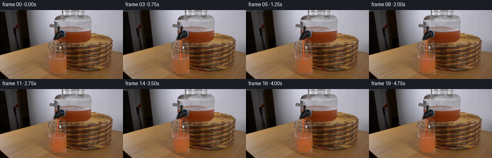
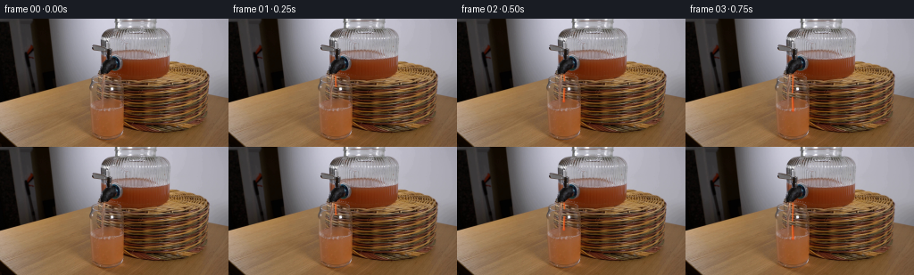

CODING AGENTS AS PIXEL WORLD MODELS
traex/GPT-5.6-Sol · 0072
点击播放 · 原生 RGB 像素
逐轮保存的候选
回放视频、检查图与代码变化。
每份候选均可单独播放。实际图片检查记录在下方工具轨迹中。
候选 01播放与检查图
点击播放 · 原生 RGB 像素


展开代码变化
--- 上一保存版本
+++ 本次保存版本
@@ -0,0 +1,204 @@
+from pathlib import Path
+import math
+
+import numpy as np
+from PIL import Image, ImageDraw, ImageFilter
+
+import artifact_io
+
+
+ROOT = Path(__file__).resolve().parent
+W, H = 256, 144
+S = 4 # supersampling for small, smooth photographic overlays
+
+
+def soft_polygon(points, blur=0.45):
+ canvas = Image.new("L", (W * S, H * S), 0)
+ draw = ImageDraw.Draw(canvas)
+ draw.polygon([(round(x * S), round(y * S)) for x, y in points], fill=255)
+ if blur:
+ canvas = canvas.filter(ImageFilter.GaussianBlur(blur * S))
+ return np.asarray(canvas.resize((W, H), Image.Resampling.LANCZOS), dtype=np.float32) / 255.0
+
+
+def soft_draw(draw_fn, blur=0.0):
+ canvas = Image.new("L", (W * S, H * S), 0)
+ d = ImageDraw.Draw(canvas)
+ draw_fn(d, S)
+ if blur:
+ canvas = canvas.filter(ImageFilter.GaussianBlur(blur * S))
+ return np.asarray(canvas.resize((W, H), Image.Resampling.LANCZOS), dtype=np.float32) / 255.0
+
+
+def composite(frame, color, alpha):
+ alpha = np.clip(alpha, 0.0, 1.0)[..., None]
+ return frame * (1.0 - alpha) + np.asarray(color, np.float32) * alpha
+
+
+def liquid_bounds(y):
+ """Inside the photographed tumbler, leaving its glass walls untouched."""
+ q = np.clip((y - 78.0) / 52.0, 0.0, 1.0)
+ return 104.8 + 4.7 * q, 136.8 - 3.2 * q
+
+
+def liquid_mask(level, phase):
+ yy, xx = np.mgrid[0:H, 0:W]
+ left = 104.8 + 4.7 * np.clip((yy - 78.0) / 52.0, 0, 1)
+ right = 136.8 - 3.2 * np.clip((yy - 78.0) / 52.0, 0, 1)
+ wave = (0.48 * math.sin(phase) * np.cos((xx - 120.0) * 0.24)
+ + 0.20 * np.sin((xx - 105.0) * 0.55 + phase * 1.7))
+ # Soft boundaries preserve the highlights/refraction already in the source.
+ inside_x = np.minimum(np.clip((xx - left) / 0.75, 0, 1),
+ np.clip((right - xx) / 0.75, 0, 1))
+ below = np.clip((yy - level - wave + 0.55) / 1.15, 0, 1)
+ bottom = np.clip((130.2 - yy) / 1.2, 0, 1)
+ return inside_x * below * bottom
+
+
+def ellipse_mask(box, blur=0.0, fill=255):
+ def painter(d, s):
+ d.ellipse(tuple(round(v * s) for v in box), fill=fill)
+ return soft_draw(painter, blur)
+
+
+def line_mask(points, width, blur=0.0, fill=255):
+ def painter(d, s):
+ p = [(round(x * s), round(y * s)) for x, y in points]
+ d.line(p, fill=fill, width=max(1, round(width * s)), joint="curve")
+ return soft_draw(painter, blur)
+
+
+def render_frame(base, index):
+ if index == 0:
+ return base.copy()
+
+ out = base.astype(np.float32).copy()
+ t = index / 4.0
+
+ # The first drops traverse the air gap; a stable stream forms at one second.
+ pouring = index >= 4
+ fill_p = np.clip((index - 3) / 16.0, 0.0, 1.0)
+ level = 102.5 - 17.0 * (fill_p ** 0.88)
+ phase = 1.35 * index
+
+ if fill_p > 0:
+ lm = liquid_mask(level, phase)
+
+ # Grapefruit juice colors the initially clear water progressively. A
+ # broad transparent tint retains all original photographic texture.
+ concentration = 0.10 + 0.62 * (fill_p ** 0.72)
+ yy, xx = np.mgrid[0:H, 0:W]
+ depth = np.clip((yy - level) / max(4.0, 130.0 - level), 0, 1)
+ body_alpha = lm * concentration * (0.22 + 0.12 * depth)
+ out = composite(out, (224, 91, 40), body_alpha)
+
+ # A warmer, sinuous descending plume depicts mixing rather than an
+ # implausible instantaneous color change.
+ plume_reach = min(30.0, 6.0 + (index - 3) * 4.3)
+ center = 120.1 + 1.8 * np.sin((yy - level) * 0.31 + index * 0.72)
+ sigma = 1.5 + 0.13 * np.clip(yy - level, 0, 30)
+ plume = np.exp(-0.5 * ((xx - center) / sigma) ** 2)
+ plume *= np.clip((yy - level + 1.0) / 2.0, 0, 1)
+ plume *= np.clip((level + plume_reach - yy) / 4.0, 0, 1)
+ plume *= lm
+ out = composite(out, (239, 76, 27), plume * (0.24 * (1.0 - 0.35 * fill_p)))
+
+ # Curling eddies near the bottom during the early mix.
+ if index <= 11:
+ curl_y = min(125.0, level + plume_reach - 1.0)
+ ring_outer = ellipse_mask((113.0, curl_y - 3.0, 127.0, curl_y + 3.2), 0.7)
+ ring_inner = ellipse_mask((115.5, curl_y - 1.6, 124.7, curl_y + 1.7), 0.7)
+ ring = np.clip(ring_outer - ring_inner, 0, 1) * lm
+ out = composite(out, (236, 85, 31), ring * 0.10)
+
+ # The meniscus: dark underside, bright coral upper rim and short-lived
+ # impact ripples, all clipped to the inside of the tumbler.
+ left, right = liquid_bounds(level)
+ meniscus = ellipse_mask((left, level - 1.25, right, level + 1.45), 0.32)
+ meniscus *= soft_polygon([(left, 78), (right, 78), (right, 131), (left, 131)], 0.2)
+ out = composite(out, (116, 50, 27), meniscus * (0.10 + 0.06 * fill_p))
+ crest = line_mask([(left + 1, level), (120, level - 0.35 * math.sin(phase)),
+ (right - 1, level + 0.1)], 0.52, 0.2)
+ out = composite(out, (255, 161, 86), crest * 0.26)
+
+ if index >= 3:
+ ripple_age = (index - 3) % 4
+ rw = 3.2 + 2.0 * ripple_age
+ ripple = ellipse_mask((120.0 - rw, level - 0.7, 120.0 + rw, level + 1.0), 0.25)
+ inner = ellipse_mask((120.0 - rw + 1.2, level - 0.15,
+ 120.0 + rw - 1.2, level + 0.48), 0.25)
+ ripple = np.clip(ripple - inner, 0, 1) * lm
+ out = composite(out, (255, 177, 98), ripple * (0.22 - 0.035 * ripple_age))
+
+ # Coherent tiny entrained bubbles rise from frame to frame.
+ for j in range(8):
+ born = 4 + (j * 3) % 10
+ age = index - born
+ if age < 0:
+ continue
+ bx = 120.0 + 7.0 * math.sin(j * 2.1 + age * 0.34)
+ by = 126.0 - ((age * (0.85 + 0.13 * (j % 3)) + j * 3.3) %
+ max(7.0, 126.0 - level))
+ lft, rgt = liquid_bounds(by)
+ if lft + 1.5 < bx < rgt - 1.5 and by > level + 2:
+ r = 0.42 + 0.12 * (j % 2)
+ bubble = ellipse_mask((bx-r, by-r, bx+r, by+r), 0.15)
+ out = composite(out, (255, 197, 133), bubble * 0.30 * lm)
+
+ # Juice in free fall. The centerline has a subtle time-coherent wobble;
+ # a bright edge and darker core make the 2-3 px stream read as translucent.
+ x0, y0 = 120.0, 62.3
+ stream_segments = []
+ if index == 1:
+ stream_segments = [(64.0, 75.0, 1.65)]
+ elif index == 2:
+ stream_segments = [(63.0, 70.0, 1.5), (78.0, 91.5, 2.35)]
+ elif index == 3:
+ stream_segments = [(63.0, 83.5, 1.7), (88.0, 102.0, 2.45)]
+ else:
+ stream_segments = [(63.0, level + 0.5, 2.35)]
+
+ for seg_i, (ya, yb, width) in enumerate(stream_segments):
+ pts = []
+ steps = max(2, round((yb - ya) / 2.0))
+ for k in range(steps + 1):
+ y = ya + (yb - ya) * k / steps
+ x = x0 + 0.28 * math.sin(index * 0.82 + y * 0.17)
+ pts.append((x, y))
+ stream = line_mask(pts, width, 0.28)
+ out = composite(out, (224, 70, 22), stream * 0.78)
+ shine_pts = [(x - 0.52, y) for x, y in pts]
+ shine = line_mask(shine_pts, 0.52, 0.16)
+ out = composite(out, (255, 183, 83), shine * 0.72)
+
+ # Rounded leading ends of the startup drops.
+ if not pouring and seg_i == len(stream_segments) - 1:
+ drop = ellipse_mask((pts[-1][0] - width * 0.58, yb - width * 0.25,
+ pts[-1][0] + width * 0.58, yb + width * 1.05), 0.22)
+ out = composite(out, (228, 73, 22), drop * 0.78)
+ glint = ellipse_mask((pts[-1][0] - 0.55, yb, pts[-1][0] + 0.05, yb + 0.8), 0.1)
+ out = composite(out, (255, 194, 99), glint * 0.70)
+
+ # Fine crown splash at impact. It remains subtle at this resolution.
+ if index >= 3:
+ splash_strength = 0.62 if index == 3 else (0.38 + 0.08 * math.sin(index * 2.2))
+ for side in (-1, 1):
+ sx = 120.0 + side * (2.0 + 0.45 * math.sin(index))
+ sy = level - 0.8 - 0.6 * ((index + (side > 0)) % 3)
+ splash = line_mask([(120.0 + side * 0.6, level), (sx, sy)], 0.58, 0.16)
+ out = composite(out, (248, 123, 50), splash * splash_strength)
+
+ return np.clip(np.rint(out), 0, 255).astype(np.uint8)
+
+
+def main():
+ base = np.asarray(Image.open(ROOT / "first_frame.png").convert("RGB"), dtype=np.uint8)
+ assert base.shape == (H, W, 3)
+ frames = np.stack([render_frame(base, i) for i in range(20)])
+ assert frames.dtype == np.uint8 and frames.shape == (20, H, W, 3)
+ assert np.array_equal(frames[0], base)
+ artifact_io.save(frames, ROOT)
+
+
+if __name__ == "__main__":
+ main()
可观测工具轨迹
实际执行的命令与返回图片。
命令 1exit 0
/bin/bash -lc "cat GENERATION_RULES.md && printf '\\n--- PROMPT ---\\n' && cat prompt.txt"
命令 2exit 0
/bin/bash -lc "find . -maxdepth 2 -type f -printf '%p\\n' | sort && printf '\\n--- IMAGE META ---\\n' && python3 - <<'PY'
from PIL import Image
im=Image.open('first_frame.png')
print(im.mode, im.size)
print(im.getextrema())
PY"命令 3exit 0
/bin/bash -lc "ffmpeg -version | head -n 3; python3 - <<'PY' for m in ['PIL','numpy','cv2','imageio','scipy']: try: x=__import__(m); print(m,'OK',getattr(x,'__version__','')) except Exception as e: print(m,'NO',e) PY"
命令 4exit 0
/bin/bash -lc "python3 - <<'PY'
from PIL import Image
import numpy as np, cv2
im=np.array(Image.open('first_frame.png'))
# save enlarged nearest neighbor for local candidate inspection if needed
Image.fromarray(im).resize((1024,576),Image.Resampling.NEAREST).save('.tmp/first_big.png')
# print coarse semantic map by average blocks 4x4
h,w=im.shape[:2]
chars=[]
for y in range(0,h,4):
row=''
for x in range(0,w,4):
p=im[y:y+4,x:x+4].reshape(-1,3).mean(0)
r,g,b=p; mx=max(p); mn=min(p); lum=.2126*r+.7152*g+.0722*b
sat=mx-mn
if lum<35: c='@'
elif lum<70: c='#'
elif lum<105: c='O'
elif lum<140: c='o'
elif lum<175: c='.'
elif lum<210: c=','
else: c=' '
if sat>35:
if r>g*1.25 and r>b*1.3: c='R' if lum<140 else 'r'
elif r>g*1.08 and g>b*1.25: c='N' if lum<150 else 'n' # orange/brown
elif r>b*1.2 and b>g*1.05: c='M'
elif g>r*1.15 and g>b*1.15: c='G'
elif b>r*1.15 and b>g*1.1: c='B'
elif r>g*1.1 and b>g*1.1: c='P'
elif r>b*1.25 and g>b*1.25: c='Y'
row+=c
print(row)
print('Legend @ black # dark O meddark o med . light , vlight space white; N/n orange; R red; Y yellow; B blue; G green')
# canny edge projection + dark/color components
lab=cv2.cvtColor(im,cv2.COLOR_RGB2LAB)
print('global mean',im.mean((0,1)).round(1),'median',np.median(im.reshape(-1,3),0))
# components for saturation > 50 and red/orange
hsv=cv2.cvtColor(im,cv2.COLOR_RGB2HSV)
for name,mask in [
('dark',(cv2.cvtColor(im,cv2.COLOR_RGB2GRAY)<70).astype('uint8')),
('sat',(hsv[:,:,1]>90).astype('uint8')),
('orange',(((hsv[:,:,0]<30)&(hsv[:,:,1]>80)&(hsv[:,:,2]>80))).astype('uint8')),
('blue',(((hsv[:,:,0]>80)&(hsv[:,:,0]<130)&(hsv[:,:,1]>50))).astype('uint8'))]:
n,l,st,c=cv2.connectedComponentsWithStats(mask,8)
comps=sorted(st[1:],key=lambda a:a[4],reverse=True)[:12]
print(name, [tuple(map(int,a)) for a in comps if a[4]>=4])
# color stats per 16x12 block
PY"命令 5exit 0
/bin/bash -lc "python3 - <<'PY'
import cv2, numpy as np
from PIL import Image
im=np.array(Image.open('first_frame.png'))
g=cv2.cvtColor(im,cv2.COLOR_RGB2GRAY)
e=cv2.Canny(g,60,140)
print('EDGE PROJECTION x')
print(sorted(enumerate(e.sum(0)//255),key=lambda z:z[1],reverse=True)[:30])
print('EDGE PROJECTION y')
print(sorted(enumerate(e.sum(1)//255),key=lambda z:z[1],reverse=True)[:25])
ls=cv2.HoughLinesP(e,1,np.pi/180,threshold=25,minLineLength=15,maxLineGap=4)
print('LINES')
if ls is not None:
for l in sorted(ls[:,0].tolist(), key=lambda q:(-(q[2]-q[0])**2-(q[3]-q[1])**2))[:40]: print(l)
# sample 16x12 centers RGB
print('\\nGRID center RGB, x=8+16n y=6+12n')
for y in range(6,144,12):
print('y%03d'%y, ' '.join('%02x%02x%02x'%tuple(im[y,x]) for x in range(8,256,16)))
# grayscale ascii based on edge map, blocks 2x2 max edge count
print('\\nEDGES 2x2')
for y in range(0,144,2):
row=''
for x in range(0,256,2):
v=e[y:y+2,x:x+2].sum()//255
row += ' ' if v==0 else '.' if v==1 else ':' if v==2 else '#' if v==3 else '@'
print(row.rstrip())
PY"命令 6exit 0
/bin/bash -lc "python3 - <<'PY'
from PIL import Image
import numpy as np
im=np.array(Image.open('first_frame.png')).astype(float)
# classify 2x2 mean exact-ish: grayscale luminance bins; lowercase hue symbol if chroma > thresholds
for title,(x0,x1,y0,y1,bs) in {
'center':(90,230,0,120,2),
'glass':(125,210,68,144,1),
}.items():
print('\\n###',title)
print(' '+''.join(str((x//10)%10) if x%10==0 else ' ' for x in range(x0,x1,bs)))
print(' '+''.join(str(x%10) if x%10==0 else ' ' for x in range(x0,x1,bs)))
for y in range(y0,y1,bs):
row=''
for x in range(x0,x1,bs):
p=im[y:y+bs,x:x+bs].reshape(-1,3).mean(0); r,g,b=p
L=.2126*r+.7152*g+.0722*b; ch=max(p)-min(p)
bins='@#Oo:. ,'
c=bins[min(7,int(L//32))]
if ch>30 and L<180:
if r>g*1.28 and r>b*1.45: c='R'
elif r>g*1.08 and g>b*1.25: c='n'
elif b>r*1.15: c='b'
row+=c
print(f'{y:03d}'+row)
PY"命令 7exit 0
/bin/bash -lc "python3 - <<'PY'
import numpy as np, cv2
from PIL import Image
im=np.array(Image.open('first_frame.png'))
# kmeans global 16 and region
for box,K,scale in [((96,0,200,100),20,1),((100,25,200,95),24,1),((125,65,205,135),24,1)]:
x0,y0,x1,y1=box;a=im[y0:y1,x0:x1]
Z=np.float32(a.reshape(-1,3))
cv2.setRNGSeed(3)
_,lab,cen=cv2.kmeans(Z,K,None,(cv2.TERM_CRITERIA_EPS+cv2.TERM_CRITERIA_MAX_ITER,50,.2),8,cv2.KMEANS_PP_CENTERS)
cen=np.uint8(cen); lab=lab.reshape(a.shape[:2])
# sort centers lum
lum=cen@np.array([.2126,.7152,.0722]); order=np.argsort(lum)
syms=list('@#"'$%&*+=!?ABCDEFHIJKLMNOPQRSTUVWXYZabcdefghijklmnopqrstuvxyz0123456789'"')
mp={int(k):syms[i] for i,k in enumerate(order)}
print('\\nBOX',box,'centers sorted')
print(' '.join(f'{mp[int(i)]}:{tuple(cen[i])}' for i in order))
for y in range(0,a.shape[0],scale):
print(f'{y+y0:03d} '+''.join(mp[int(x)] for x in lab[y,::scale]))
PY"命令 8exit 0
/bin/bash -lc "python3 - <<'PY'
import cv2,numpy as np
from PIL import Image
im=np.array(Image.open('first_frame.png')); e=cv2.Canny(cv2.cvtColor(im,cv2.COLOR_RGB2GRAY),70,150)>0
for y in range(55,136):
xs=np.where(e[y])[0]
# runs
runs=[]
if len(xs):
s=p=xs[0]
for x in xs[1:]:
if x>p+1:runs.append((s,p));s=x
p=x
runs.append((s,p))
print(f'{y:03d}', ' '.join(str(a) if a==b else f'{a}-{b}' for a,b in runs))
PY"命令 9exit 0
/bin/bash -lc "cat artifact_io.py && python3 - <<'PY'
from PIL import Image
import numpy as np
im=np.array(Image.open('first_frame.png'))
# print patches as RGB colors and luminance for suspected nozzle; every pixel grouped
for name,(x0,y0,x1,y1) in {'spout':(100,25,145,75),'glass':(130,68,205,135)}.items():
print('\\n',name)
for y in range(y0,y1):
s=''
for x in range(x0,x1):
r,g,b=map(int,im[y,x]); L=(r*2+g*5+b)//8; c='@#Oo:. ,'[min(7,L//32)]
# only hue for unusual enough relative to neighborhood schema
if max(r,g,b)-min(r,g,b)>45:
if r>g*1.25 and r>b*1.4: c='R'
elif r>g*1.08 and g>b*1.25: c='n'
elif b>r*1.25: c='b'
s+=c
print(f'{y:03} {s}')
PY"命令 10exit 0
/bin/bash -lc "python3 - <<'PY'
import cv2,numpy as np
from PIL import Image
im=np.array(Image.open('first_frame.png')); e=cv2.Canny(cv2.cvtColor(im,cv2.COLOR_RGB2GRAY),30,100)
ls=cv2.HoughLinesP(e,1,np.pi/720,threshold=15,minLineLength=8,maxLineGap=3)
a=[]
for l in ls[:,0]:
x1,y1,x2,y2=map(int,l); dx=x2-x1;dy=y2-y1;ln=(dx*dx+dy*dy)**.5
if ln>=8 and (abs(dx)<4 or abs(dy)<4):a.append((round(ln,1),(x1,y1,x2,y2)))
for z in sorted(a,reverse=True)[:100]:print(z)
PY"命令 11exit 0
/bin/bash -lc "python3 - <<'PY'
from PIL import Image
import cv2,numpy as np
im=np.array(Image.open('first_frame.png')); e=cv2.Canny(cv2.cvtColor(im,cv2.COLOR_RGB2GRAY),60,140)>0
for rg in [(60,135),(75,132),(85,132),(95,132)]:
y0,y1=rg
a=e[y0:y1].sum(0)
print(rg,sorted([(int(v),i) for i,v in enumerate(a)],reverse=True)[:30])
PY"命令 12exit 1
/bin/bash -lc "python3 generate.py && python3 - <<'PY'
from pathlib import Path
from PIL import Image
import numpy as np
base=np.array(Image.open('first_frame.png'))
fs=np.stack([np.array(Image.open(f'frames/{i:02d}.png')) for i in range(20)])
print('shape/dtype',fs.shape,fs.dtype)
print('frame0 exact',np.array_equal(fs[0],base))
for i in range(20):
d=np.abs(fs[i].astype(int)-base.astype(int))
changed=np.any(d,2)
ys,xs=np.where(changed)
print(i,'changed',changed.sum(),'bbox',None if not len(xs) else (xs.min(),ys.min(),xs.max(),ys.max()),'mae',round(d.mean(),3),'max',d.max())
print('outputs',[(p.name,p.stat().st_size) for p in Path('.').glob('*') if p.is_file()])
PY"命令 13exit 0
/bin/bash -lc "python3 generate.py && python3 - <<'PY'
from pathlib import Path
from PIL import Image
import numpy as np
base=np.array(Image.open('first_frame.png'))
fs=np.stack([np.array(Image.open(f'frames/{i:02d}.png')) for i in range(20)])
print('shape/dtype',fs.shape,fs.dtype)
print('frame0 exact',np.array_equal(fs[0],base))
for i in range(20):
d=np.abs(fs[i].astype(int)-base.astype(int)); changed=np.any(d,2); ys,xs=np.where(changed)
print(i,'changed',changed.sum(),'bbox',None if not len(xs) else (xs.min(),ys.min(),xs.max(),ys.max()),'mae',round(d.mean(),3),'max',d.max())
print('key output sizes',[(p.name,p.stat().st_size) for p in [Path('pixels.npz'),Path('inspection.png'),Path('transition_check.png'),Path('index.html')]])
PY"命令 14exit 0
/bin/bash -lc "python3 - <<'PY'
from PIL import Image
import numpy as np
fs=np.stack([np.array(Image.open(f'frames/{i:02d}.png')).astype(int) for i in range(20)])
print('TEMPORAL')
for i in range(1,20):
d=np.abs(fs[i]-fs[i-1]); mask=np.any(d,2)
print(f'{i-1:02}->{i:02}: pixels={mask.sum():4d} mean={d.mean():.4f} region_mean={d[58:132,102:139].mean():.3f} max={d.max()}')
print('liquid region means RGB')
for i in range(20): print(i,fs[i,108:126,110:131].mean((0,1)).round(1))
PY"命令 15exit 0
/bin/bash -lc "python3 - <<'PY'
from PIL import Image
import numpy as np
# compact crop maps: source-like luminance; J marks warm juice pixels relative to frame0
base=np.array(Image.open('first_frame.png')).astype(int)
for fi in [0,1,3,4,8,12,16,19]:
im=np.array(Image.open(f'frames/{fi:02d}.png')).astype(int)
print('\\nFRAME',fi,' crop x100:141 y55:132 scale 1x2')
for y in range(55,132,2):
s=''
for x in range(100,141):
p=im[y:y+2,x].mean(0); d=(im[y:y+2,x]-base[y:y+2,x]).mean(0)
L=p@[.2126,.7152,.0722]
c='@#Oo:. ,'[min(7,int(L//32))]
if d[0]>12 and d[0]-d[1]>8: c='J'
elif d[0]>4 and d[0]-d[2]>5: c='j'
s+=c
print(s)
PY"命令 16exit 0
/bin/bash -lc 'python3 -m py_compile generate.py artifact_io.py && sha256sum first_frame.png frames/00.png pixels.npz && git status --short 2>/dev/null || true'
保存候选 1 份；完成命令 16 次；可验证图片返回 0 张。原始 API 响应与完整日志保留在本地。